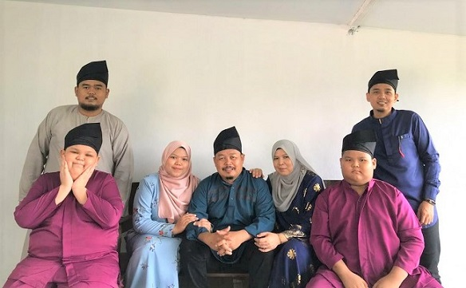
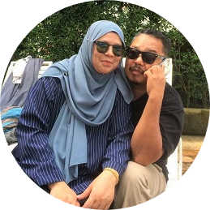
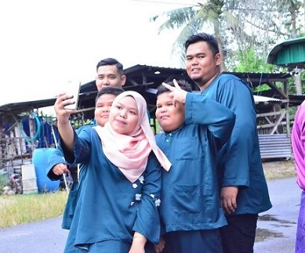

| HI, EVERYONE! | HOME | ABOUT ME | FAMILY | GALLERY |

| My parents got married on January 1, 1993 and were blessed with 5 children and
4 of them are men. I am the only daughter in our family. being the only daughter in
the family makes them jealous of other siblings because their small age difference
makes them close.
“Sibling – The definition that comprises love, stripe, competition and forever friends.” Byron Pulsifer Even though our siblings' attitudes are very different from each other we still need each other. |
| MY PARENTS | MY SIBLINGS | |
|  |  |
|
|
Mohd Fadzil Bin Abdul Rahman
23rd March 1971 Malayan Sugar Sdn Bhd Strict & fun person Siti Rohani Binti Yakop 29th December 1970 Housewife Soft & cute person |
Mohd Farid
22nd June 1995 Sony Corporation Clumsy & independent person Muhd Imran 29th October 1996 Ann Joo Steel Berhad Strict & responsible person |
Mohd Faris Iman
11th January 2008 Soft & playful person Mohd Faris Ikhmal 22nd August 2010 Manja boy |